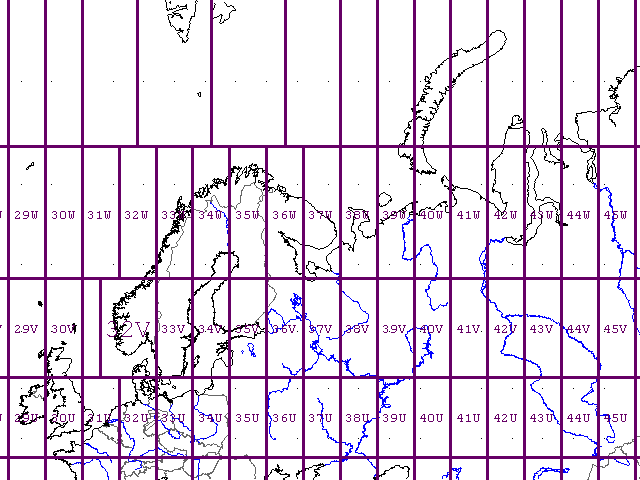
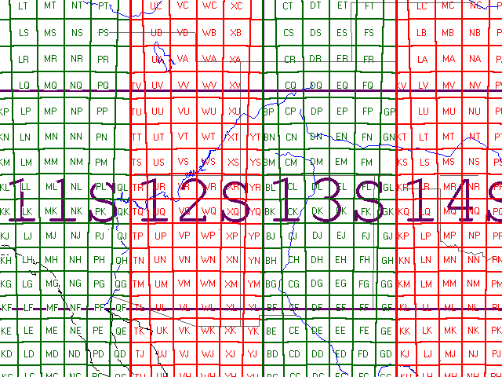
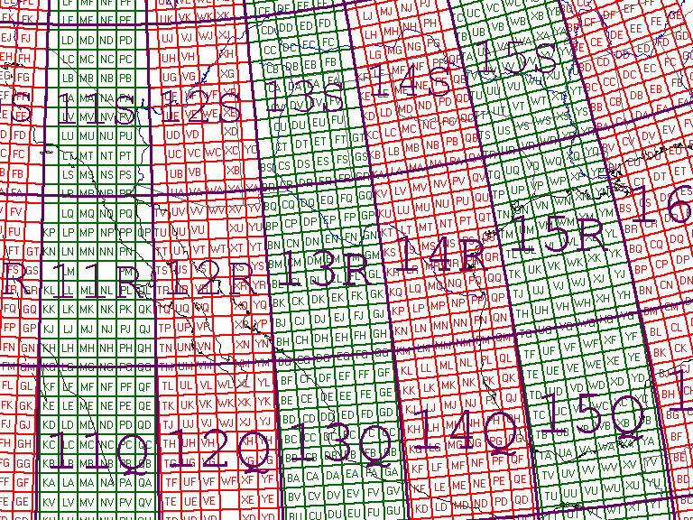

MGRS Zones
You can overlay MGRS zones and 100K grid zone
designators from  Map Overlays . You
must have the cartography options enabled on the options form. The zones will be labeled if
there is enough room in the zone.
Map Overlays . You
must have the cartography options enabled on the options form. The zones will be labeled if
there is enough room in the zone.
MGRS (Military Grid Reference System), valid only away from the poles, coordinates consist of modified UTM coordinates:
MGRS zones are bounded by lines of latitude and longitude, they are not all the same size and are not in fact rectangular. They appear rectangular only on projections like the Mercator which distort the converging meridians.
The 100K grid zones should all be the same size and shape, since they are squares 100 km on a side, and at that scale the curvature of the earth is not obvious They can be used like the Tissot indicatrix to get an idea of the distortion produced by a projection.

Note non-standard zones around Norway (32V) and around Spitsbergen to the north (32-36, unlabeled).

Zones on a Mercator Projection. Note that the 100,000 m squares increase in size (apparently, on this projection) northward due to distortion by the projection. The number of squares per zone decreases northward as the meridians converge.

Grid zones on a UTM projection for zone 11. Note increasing distortion to the east. There would be a symmetrical pattern to the west, but we see only a small portion of zone 10.
For the 100,000 m squares, note that the first letter for easting repeats every three zones, and the second letter for northing repeats every other zone.
Last revision 8/31/2011